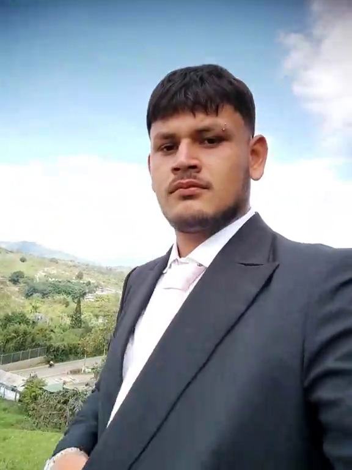

¿Quién soy?
Mi nombre es Iván Andrés Salazar Serna. Soy una persona con deseos de superación, interesada en aprender y adquirir nuevos conocimientos para construir mi futuro.

Iván Andrés Salazar Serna
Presentación personal
Mi nombre es Iván Andrés Salazar Serna. Soy una persona con deseos de superación, interesada en aprender y adquirir nuevos conocimientos para construir mi futuro.
Me considero una persona con curiosidad, iniciativa y motivación para alcanzar mis metas personales y profesionales. Valoro la responsabilidad, el respeto y el compromiso.